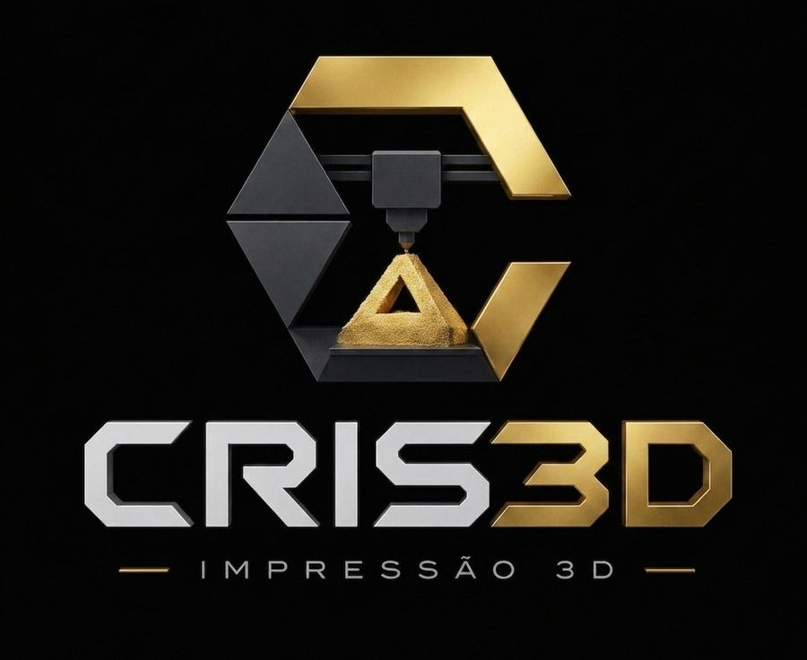

Sobre a Cris3D
A Cris3D nasceu de um gosto pela impressão 3D. Começou com peças para amigos e família e hoje faz relógios, prendas personalizadas, candeeiros e peças à medida para quem procura algo único.
Todas as peças são desenhadas e impressas na Marinha Grande, numa impressora Bambu Lab P1S.

Do pedido à entrega
- Recebemos o seu pedido com a ideia e uma foto.
- Desenhamos a peça em 3D e enviamos a proposta.
- Depois de aprovada, imprimimos e confirmamos a qualidade.
- Entregamos em mão na Marinha Grande ou enviamos por correio.
Materiais que usamos
PLA
Feito a partir de amido de milho ou cana-de-açúcar. É biodegradável em condições industriais e é o material que usamos na maioria das peças.
Ideal para: decoração, prendas, cortadores e porta-chaves.
PETG
Mais resistente ao calor e ao impacto. É reciclável e dura muito tempo.
Ideal para: suportes, peças técnicas e peças de substituição.
Como reduzimos o desperdício
- Só imprimimos o que é pedido: não há peças paradas nem deitadas fora.
- Reparar em vez de deitar fora: fazemos peças de substituição para objetos partidos.
- Peças leves: o enchimento por dentro é ajustado para gastar menos material.